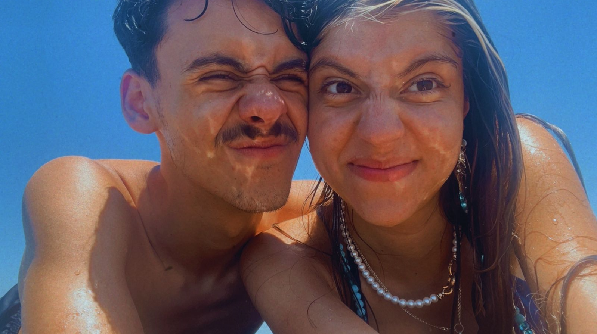

Na terça-feira, dia 13, vamos fazer cinco meses de namoro.
Eu só quero que o clima não esteja tão ruim entre a gente.
Quero que essa data seja marcada por mais um dia em que estivemos felizes juntos, mesmo longe.
Não quero que ela pense tanta coisa ruim de mim.
Parecia que ela estava engasgada com tudo isso.
Só quero que ela se sinta bem comigo.
Ela é muito importante pra mim.
Desabafos do caduco para caduco
11/01
Hoje eu briguei com a Sofia e foi estranho, discutimos muito. Mais cedo, quando começamos a discutir, ela tocou novamente no assunto de que não quer que eu me magoe e que não quer que eu fique chateado ou algo do tipo. Mas, pela primeira vez, ela falou em achar que eu poderia ser feliz com outra pessoa.
Isso foi estranho de ouvir, porque eu gosto muito do que a gente tem. Eu consigo imaginar a gente por anos juntos. Ela me faz feliz. Ela me faz me sentir bem. Ela me trouxe uma nova forma de enxergar tudo. Ela chegou em um momento em que eu mais precisava ter alguém como ela.
Ela é única. O que ela faz por mim e comigo é algo muito nosso.
Demos uma melhorada no clima e depois brigamos novamente, porque ela achou que eu não queria falar com ela. Ela disse que iria me ligar em um certo momento, seria no banho, e eu entendi que ela ainda demoraria para chegar no hotel, que ainda iria para lá antes de me ligar.
Comentei que iria até a garagem ficar com meu pai, com a minha família que estava ali. Eu não queria ir para lá e não falar com a Sofia, eu só pensei que ela iria demorar. Mas foi um mal-entendido grande.
Acho que ela acabou se sentindo ignorada, porque depois ficou tocando nesse assunto, que eu não dava prioridade para ela, que ela não era minha prioridade, que eu precisava me esforçar mais. No fim, tudo isso foi um grande mal-entendido.
Ela é a minha prioridade. Eu dedico a maior parte do meu tempo pra ela, não por obrigação ou algo do tipo, mas porque eu amo ela e acho que realmente vale o esforço. Ela me falou tudo isso hoje e parece que era algo que estava engasgado com ela.
Tenho medo de ela estar se sentindo mal comigo e de eu estar fazendo mal pra ela de alguma forma. Mas a Sofia é o grande amor da minha vida e eu espero que ela enxergue isso. Espero que ela não queira se afastar de mim e que veja que tudo isso foi um mal-entendido.
Esses dias que ela está distante vão doer, porque já estão doendo. Já está sendo estranho. Mesmo quando a gente ficava dois ou três dias sem se ver, saber que ela está longe é diferente. Mas eu acredito que a gente vai passar por isso. Quero que ela se sinta bem, segura e feliz ao meu lado.
